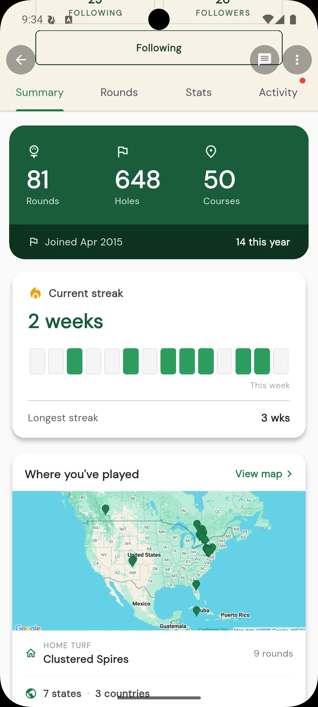
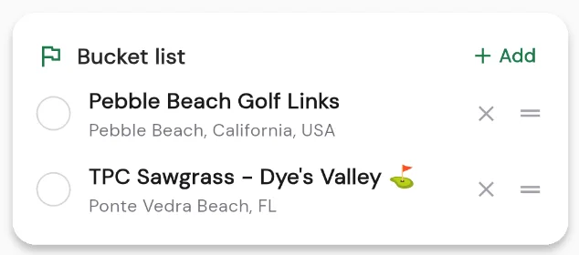

Your golf passport: the new profile Summary
Jul 14, 2026
Every round you log tells a small part of your golf story. The new Summary tab on your profile pulls the whole story together in one place: how much you play, where you play, and where you still want to go. Think of it as your golf passport, stamped one course at a time.

Your rounds and your streak
At the top, the Summary tab shows the rounds you have played and a streak chain: how many weeks in a row you have gotten out to play. It is a simple, satisfying nudge to keep the run going. Miss a week and the chain resets, so there is always a reason to book one more tee time.
Your golf passport, on the map
Every course you have logged a round at drops a pin on your map. Zoom out and you can see the shape of your golf life: the home track you play every week, the courses from that trip a few summers ago, the one-off rounds while travelling for work. It is a surprisingly personal picture built entirely from your scorecards.
That map is your golf passport. The courses you have played gather together like stamps, so your history becomes something worth flipping through, and it grows on its own every time you finish a round somewhere new.
A bucket list to chase
The story is not just where you have been. The Summary tab also holds your bucket list: the courses you are dreaming about and saving up for. Add the ones you want to play, keep them in view, and check them off as you make it to each. Every stamp you earn is one more line in your golf story.

Go see your story
Open your profile and tap over to the Summary tab. Watch your streak build, fill in your map, grow your passport, and start a bucket list of where you want to play next.